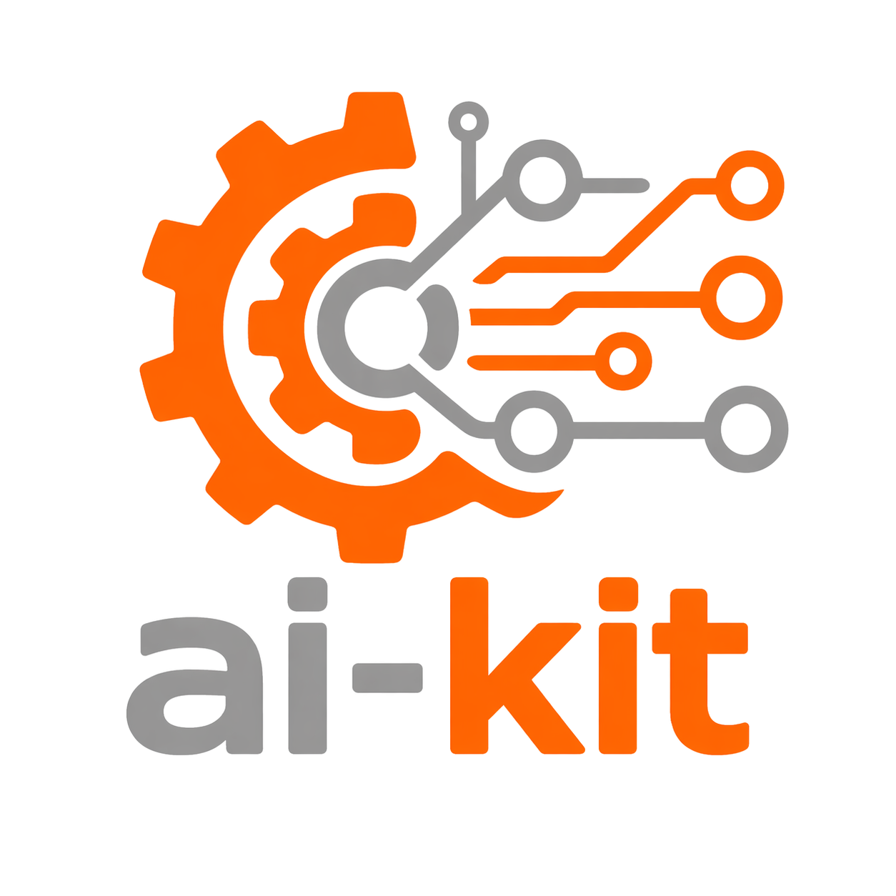

ai-kit Rustdoc
Stable local API documentation for the crates in this workspace.
Start at each crate root for primary handles and traits, then follow its functional modules for configuration and request types.
See the workspace and crate README, ARCHITECTURE, and AGENTS files for usage guides, invariants, and exact validation commands.
- agent-sdk Portable Agent runtime with statically preserved provider and storage implementations, prompt-local Model continuation, durable workspaces, foreground conversations, notifications, managed knowledge, executable tools, and Codex/OpenCode integration.
- app-sdk Durable application workspaces, opaque workflow definitions, checkpointed runs, and orchestration over direct caller-built AgentBackend implementations.
- provider-sdk Provider → Model → Session resources with Model-associated continuation, exact model selection, generation, streaming, embeddings, files, batches, and runtime checks.
- storage-sdk Portable Database subdomains plus cloneable StateStore and owned StateTransaction contracts for transactional control-plane state.
- tool-sdk Local and MCP Toolsets, associated handlers, source-neutral execution, and an independent MCP server product.